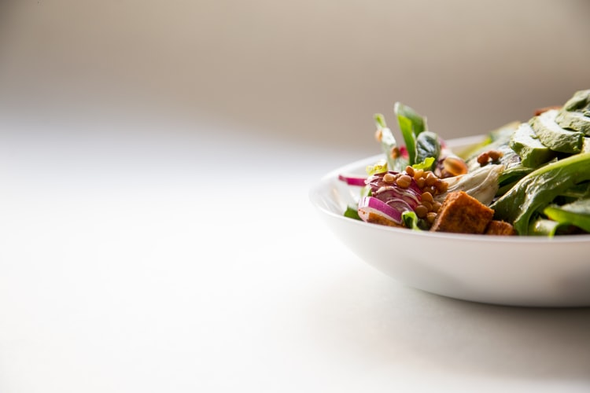

Lifestyle Changes to be Eco-Friendly
To become green requires some life changes, so whether you are looking for new ways to be sustainable or are looking to permanently incorporate some eco-friendly lifestyle changes, there are many modifications you can make that are kind to the planet. Here are some you can start today:
Driving ‘Green’
For those with a car, driving is one of the biggest carbon footprints they leave on the planet. If you commute to work, consider public transport, car-sharing, cycling or walking to work. Life changes to become green do not have to be dramatic. Perhaps you can work from home some days, so you don’t have to commute at all, or change your hours so you miss the rush hour. If you have to drive, watch your speed so that you drive at the optimum for the car and keep your CO2 emissions low. Anticipate traffic so you are not slamming on the breaks, then pushing the accelerator hard. Finally, remove any excessive weight in your car, such as a golf bag with clubs stored in the boot. Every 50 kilograms of extra weight requires another two per cent of fuel.
Meal planning
Discarded food is one of the most serious environmental problems of our age. In some countries, a fifth of all food produced is discarded by individuals buying more food than needed, perhaps tempted by special offers particularly if you go shopping when hungry. Lifestyle changes here are simple: planning meals and writing a shopping list will cut down on the number of impulse buys. If you do make a purchase “off-list” you can adjust your meal plan to fit so that no food is spoiled. This usually leads to a healthier diet, helping you feel better and saving you time and money.
Know about the food you buy
With the rise of supermarkets, it has been easy for many to lose contact with where food comes from. Buying organic foods is the least harmful to the environment, but shopping in season takes a lifestyle change a step further as it connects you deeper with nature which is another incentive to become green. Look for meats that come from humane farms that do not use antibiotics or hormones. You can also reduce the amount of meat you eat each week. Fair Trade labelled goods promote better standards for the producer and the environment. If you can, grow your own food. If you do not have a garden, you can grow herbs in pots on a window ledge and tomatoes in a grow-bag on a balcony.

Reduce plastic waste
You may think that plastic is impossible to get rid of, but some countries, including Rwanda, have banned the use of plastic carrier bags and the European Union has agreed to ban many single-use plastic items including straws, food containers and mixer sticks. It is easy enough to cut down on plastic use as more and more people understand the need for change and use cloth bags for shopping. You can buy items secondhand, shop locally and reduce online shopping to reduce transport miles and excess packaging. Also, recycle as much as you can, as together these small changes add up and make a difference. For the same reason of stop using plastic you should also stop use non-organical materials for your daily meals for example - find more.
Eco-friendly cleaners
You can make your own natural cleaners at home, without having to resort to shop-bought brands which can contain dangerous chemicals, packaged in petroleum-based products which together all contributes to greenhouse gas emissions.There are just a few staple ingredients you will need to make natural cleaners to cover almost all the jobs in the house.
White vinegar cleans glass, floors, bathrooms, dishes, fabrics, stains, and more. You can use it diluted or with baking soda, depending on the cleaning job. Baking soda adds a punch to the eco-cleaning you need to do. Borax, in diluted form, is a natural ingredient in many cleaning recipes. Essential oils can be mixed with water and or vinegar for an easy household cleaner. You can also use an essential oil diffuser to help purify the air and fill it with a clean scent, such as lemon, eucalyptus or lavender. There are many recipes online.